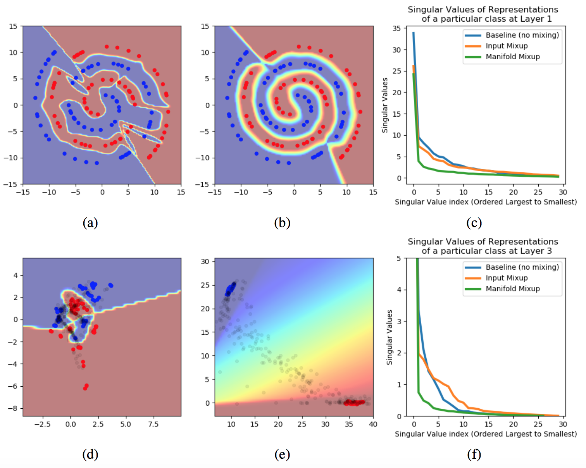
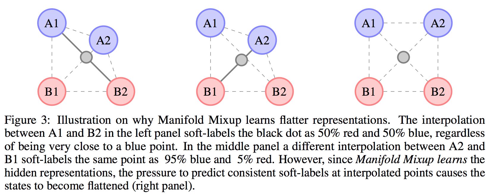
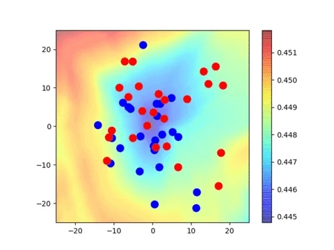
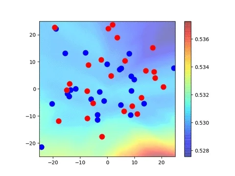
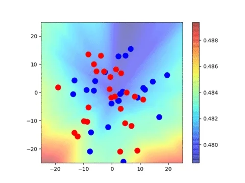
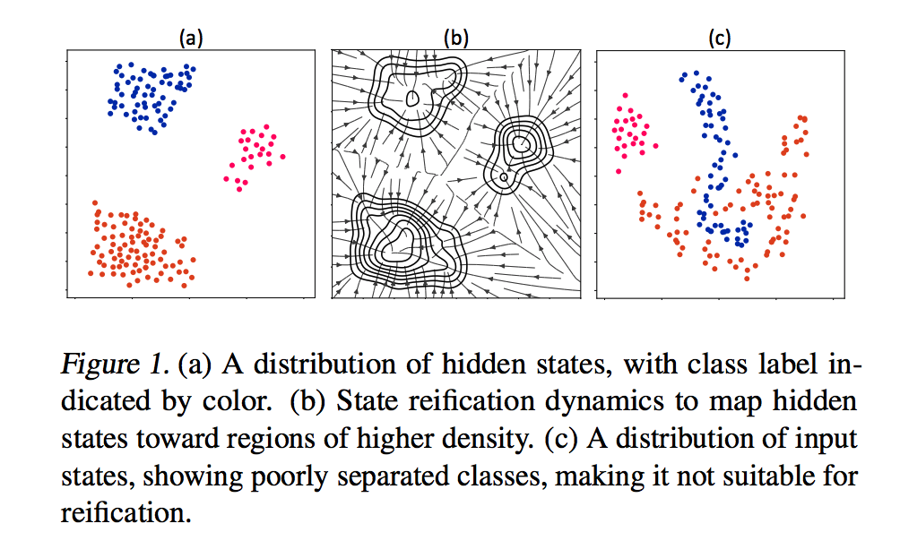
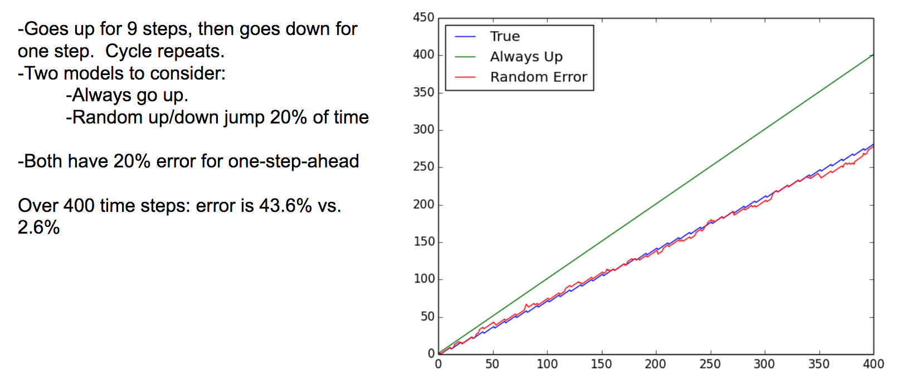

Alex Lamb.
PhD Student at Universite de Montreal (MILA).
Contact:
lambalex@iro.umontreal.ca
If you're interested in collaborating or discussing ideas feel free to reach out.
Research Interests:
-How the brain works.
-Limitations in neural networks, especially those that coincide with things that humans do well.
-History and language.
Background:
Previously employed by Preferred Networks (PFN) and Amazon.
Basic Research Projects:
Manifold Mixup





State-Reification Networks

GibbsNet
Adversarially Learned Inference
Discriminative Regularization
Professor Forcing

Applied Research Projects
Pre-Modern Japanese: Japan reformed their writing system in 1900, making all of their writing from 800-1900 unreadable to all but a handful of specially trained scholars. Thus many interesting and practically important documents such as the following guide on how to identify fish people are unreadable by the average Japanese person!

To help address this, we've built an ML system which can recognize the Japanese characters! Check out some results (blue is ground truth, green is predicted, errors are marked with a red X):

Demand Forecasting
When I worked at Amazon (2013-2015), I developed demand forecasting systems using deep learning.
Twitter Flu Analysis
We built a system to analyze tweets about the flu to discriminate between people having the flu and people simply discussing the flu. Using the system the results are significantly closer to CDC's estimated infection rates. This was oral at NAACL 2013 and received extensive press coverage.
Awards
Best Paper Award, Japanese Information Processing Society of Japan, 2018
https://twitter.com/tkasasagi/status/1096701581871931397
Art:
Deep Learning Poems (20% original)
中文
我的名是羊老大.
我在学中文因为我喜欢中国人.
我喜欢兔子因为兔兔那么可爱了.
北中国人比南中国人好吗? 我不知道.
我在美国出生.
天高高。海滔滔.